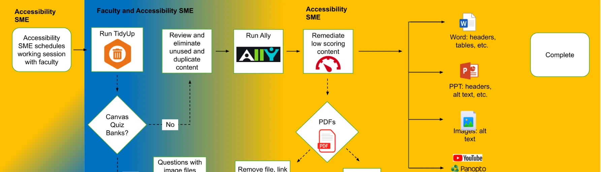

Accessibility in Nursing Canvas Courses
Reviewing and correcting course accessibility with faculty, and catching new issues before launch
A review process I built with faculty that raised average accessibility scores from 74% to 92% across more than 100 courses.
- Audience
- School of Nursing students and faculty
- Responsibilities
- Accessibility review process, corrections within course structure, work with faculty on accessible materials, accessibility checks in the pre-term readiness checklist
- Tools
- Ally, TidyUp, Canvas Accessibility Report
Context
Students in the School of Nursing use Canvas for readings, lectures, clinical materials, and exams. Course content has to be usable by every student, including those who rely on screen readers, captions, or keyboard navigation. Public universities are also required to meet federal accessibility standards.
Problem
Many course sites had been built over several years by different faculty. Common issues included missing alt text on images, videos without accurate captions, scanned PDFs that screen readers could not read, and low contrast color usage.
Approach
Working with stakeholders, I developed a process to review Canvas accessibility with faculty members, using Ally, TidyUp and the Accessibility Report. I corrected issues within the course structure and worked with faculty to locate accessible materials. I added accessibility checks to the pre-term readiness checklist so new issues would be caught before course launch.
Artifact: Accessibility Process Flow
The review process used with faculty on each course. A text version follows the image.

Text version of the flowchart
- The accessibility SME schedules a working session with faculty.
- Faculty and the accessibility SME run TidyUp. If the course uses Canvas quiz banks, questions with image files are reviewed separately. Otherwise, they review and remove unused and duplicate content.
- Run Ally.
- The accessibility SME remediates low-scoring content: Word files (headers, tables), PowerPoint files (headers, alt text), images (alt text), and video on YouTube or Panopto (captions). PDFs are removed and linked to another source, such as the library or a website, or marked as an exception.
- Complete.
Outcome
74% → 92% average accessibility scores across 100+ School of Nursing courses after remediation.
Reflection
Accessible design benefits more students than those with a documented need. Clear headings, captions, and readable documents help a student reviewing on a phone between clinical shifts as much as one using assistive technology.
More projects
- BS-DNP Online Course Template RedesignA new course template for the online BS-DNP program, built with eCampus, the program director, and faculty
- Standardizing AI Use Expectations in the School of NursingA shared system for communicating AI use at the assignment level
- Course Readiness for the School of NursingLaunching every nursing course, every semester